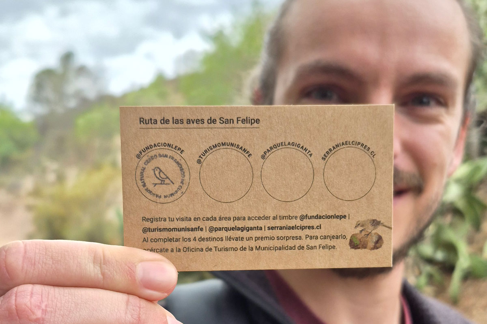
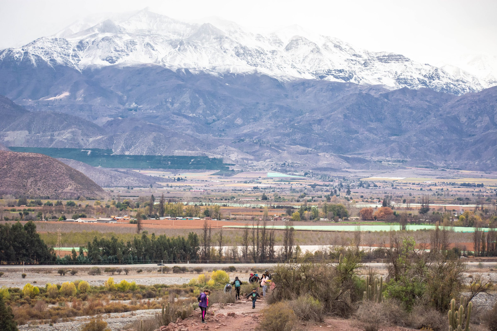
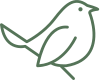
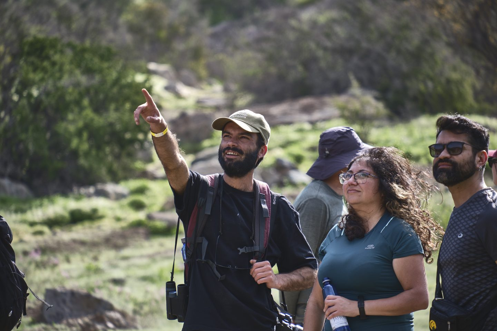

2
horas de recorrido
761 m
Altitud máxima
3,67 km
Distancia
Fácil
Dificultad

Coronel Santiago Bueras 826, Curimón, San Felipe, Valparaíso
Conoce cómo llegar desde diferentes procedencias
Recuerda:
Camina por los senderos delimitados.
Llévate tu basura (desechos orgánicos e inorgánicos).
Sé responsable con tus mascotas: utiliza correa y recoge sus fecas.
Está prohibido el consumo de alcohol y drogas.

Respeta a todos los seres que habitan este espacio.
Está prohibido fumar y encender fuego. Si enciendes velas, que sea en los lugares dispuestos para ello.
No te quedes fuera de nuestros

Sábado 25 julio
10 a 13 horas


Flora y Fauna
Ésta es una guía en terreno desarrollada por el programa Vivo Curimón de Fundación Lepe. Para una óptima lectura y uso, te recomendamos descargarla en tu celular antes de visitar el Parque Natural Cerro San Francisco de Curimón, u otros ecosistemas similares. Toda la información de esta guía, te servirá para visitar otros entornos naturales similares.